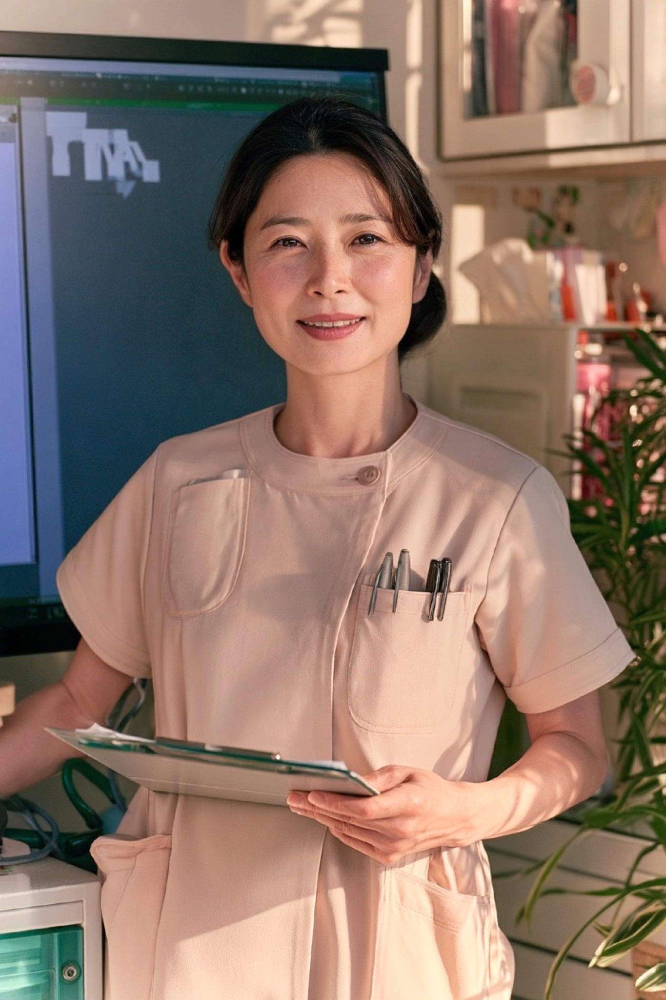

院長：
佐藤 太郎
経歴：光明大学医学部卒業後、瑞穂中央総合病院で内科医として10年間勤務。その後、地域医療への貢献を目指し、佐藤医院を開院。
専門分野：生活習慣病、呼吸器疾患、内科全般
コメント：患者様にとって気軽に相談できる「かかりつけ医」を目指しています。どんな小さな不安でも、まずはご相談ください。
当サイトは制作課題用の架空の医院です。
掲載している住所・電話番号・人物はすべて架空のものです。
ABOUT
佐藤医院は、地域の皆様の健康を守り、より良い生活をサポートすることを使命としています。創立以来、私たちは「患者様一人ひとりに寄り添った診療」を大切にし、地域密着型の医療を提供してまいりました。今後も、皆様の健康維持と病気予防に貢献するため、より良い医療サービスを提供し続けることをお約束いたします。

当院の診療方針は、「患者様の声に耳を傾け、共に歩む医療」です。内科を中心にさまざまな疾患へ対応し、症状を的確に診断して最適な治療を提供します。患者様との信頼関係を大切に、わかりやすく丁寧な説明を行い、納得いただける治療方針を一緒に考えます。病気の治療だけでなく、生活習慣の改善や予防についてもアドバイスし、患者様の健康管理を全力でサポートします。治療方法やお薬について不安があれば、遠慮なくお尋ねください。

佐藤医院は、地域の皆様の健康を守るために、長年にわたり地域医療を支えてきました。定期的な健康診断や健康相談も実施し、地域住民の皆様が健康な生活を送れるようサポートしています。病気の治療だけでなく予防の重要性も強く認識し、定期的な健診を通じた早期発見・早期治療に努めています。

当院では、子どもから高齢者まですべての年代の患者様に対応し、各世代に必要な医療サービスを提供しています。予防医療や健康相談を通じて、ご家族全員のより良い生活習慣の定着を目指します。
子どもの成長や発育に関するアドバイス、予防接種を行っています。
高齢者の健康管理や介護予防、生活習慣病の管理をしっかりサポートします。

診断精度を高めるため、最新の医療設備を導入し診療に活かしています。必要に応じて適切な検査を行い、迅速に対応します。また、医師・看護師・事務スタッフが一丸となるチーム医療を実践し、スタッフ全員が最新の治療法・技術の研鑽を積みながら、患者様に最適なケアを提供します。


佐藤医院は、地域医療の一翼を担う医療機関として「患者様第一」の精神を大切にしています。単に病気を治療するだけでなく、患者様が心身ともに健やかな生活を送れるよう、あらゆる面からサポートすることを使命と考えています。
佐藤医院では、患者様の健康を第一に考え、今後も安心・安全な医療を提供し続けます。どんな小さな悩みでも、お気軽にご相談ください。地域の皆様とともに、より健康で豊かな生活を築いていきたいと考えています。スタッフ一同、皆様のご来院を心よりお待ちしております。

STAFF
地域の皆様に安心してご来院いただけるよう、スタッフ一同、誠心誠意対応いたします。それぞれの専門性と温かさを活かし、皆様の健康を支えるパートナーとしてお力になれるよう努めてまいります。
院長：
経歴：光明大学医学部卒業後、瑞穂中央総合病院で内科医として10年間勤務。その後、地域医療への貢献を目指し、佐藤医院を開院。
専門分野：生活習慣病、呼吸器疾患、内科全般
コメント：患者様にとって気軽に相談できる「かかりつけ医」を目指しています。どんな小さな不安でも、まずはご相談ください。

看護師長：
経歴：白桜大学看護学部卒業後、緑が丘大学病院で10年勤務。地域医療に携わりたい思いから、佐藤医院に入職。
得意分野：親身な対応、注射・採血技術、健康管理指導
メッセージ：安心して治療を受けていただけるよう、いつも笑顔でお待ちしています。些細なことでもお気軽にご相談ください。
臨床検査技師：
経歴：東都臨床検査技術専門学校を卒業後、武蔵中央医療センターにて15年間の臨床検査技師としての経験を積む。
得意分野：血液検査、心電図検査、超音波検査
コメント：検査は不安が伴うこともありますが、できるだけリラックスしていただけるよう、優しく丁寧な対応を心がけています。
医療事務：
経歴：希望医療カレッジ卒業後、さくら診療所にて受付業務を担当。現在は佐藤医院で患者様対応を担当。
得意分野：受付業務、カルテ管理、医療費計算
コメント：皆様に気持ちよくご利用いただけるよう、笑顔と真心を大切にしております。初めての方もどうぞ安心してお越しください。